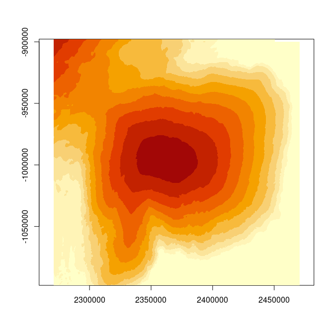

The goal of remav2 is to provide access to the The Reference Elevation Model of Antarctica (REMA) v2 via its mosaic index. The index has been augmented to included geographic extent (xmin, xmax, ymin, ymax) and the actual GeoTIFF urls needed to read and interrogate the actual data with minimal fuss and plumbing.
Installation
You can install the development version of remav2 from GitHub with:
# install.packages("devtools")
devtools::install_github("AustralianAntarcticDivision/remav2")Example
This is a basic example.
Everything we need is in this index table.
library(remav2)
library(dplyr)
#>
#> Attaching package: 'dplyr'
#> The following objects are masked from 'package:stats':
#>
#> filter, lag
#> The following objects are masked from 'package:base':
#>
#> intersect, setdiff, setequal, union
(index <- remav2_index())
#> # A tibble: 5,800 × 16
#> dem_id tile xmin xmax ymin ymax s3url data_…¹ num_c…²
#> <chr> <chr> <dbl> <dbl> <dbl> <dbl> <chr> <dbl> <int>
#> 1 41_40_2_2_2m… 41_40 949900 1000100 1049900 1100100 http… 0.87051 86
#> 2 41_40_2_1_2m… 41_40 899900 950100 1049900 1100100 http… 0.93290 148
#> 3 41_40_1_2_2m… 41_40 949900 1000100 999900 1050100 http… 0.89323 129
#> 4 41_40_1_1_2m… 41_40 899900 950100 999900 1050100 http… 0.88104 80
#> 5 18_23_2_1_2m… 18_23 -800100 -749900 -1250100 -1199900 http… 0.99238 147
#> 6 18_23_1_1_2m… 18_23 -800100 -749900 -1300100 -1249900 http… 0.78005 93
#> 7 18_23_1_2_2m… 18_23 -750100 -699900 -1300100 -1249900 http… 0.48723 86
#> 8 18_23_2_2_2m… 18_23 -750100 -699900 -1250100 -1199900 http… 0.95989 165
#> 9 29_14_1_1_2m… 29_14 -1700100 -1649900 -200100 -149900 http… 0.99462 76
#> 10 29_14_2_1_2m… 29_14 -1700100 -1649900 -150100 -99900 http… 0.98564 54
#> # … with 5,790 more rows, 7 more variables: cog_browse <chr>, cog_dem <chr>,
#> # cog_count <chr>, cog_countmt <chr>, cog_mad <chr>, cog_maxdate <chr>,
#> # cog_mindate <chr>, and abbreviated variable names ¹data_percent,
#> # ²num_componentsWe can visualize the coverage of the tiles with their extents.
xlim <- range(unlist(index[c("xmin", "xmax")]))
ylim <- range(unlist(index[c("ymin", "ymax")]))
plot(NA, xlim = xlim, ylim = ylim, xlab = "x", ylab = "x", asp = 1)
rect(index$xmin, index$ymin, index$xmax, index$ymax)
REMA v2 is an intensely detailed product, each of these tiles represents a raster grid with dimensions 25100x25100, with resolution of 2m.
We can interrogate a specific place by finding the tile of interest.
## Casey station
pt <- cbind(2447000, -916300)
library(dplyr)
tile0 <- index |> filter(xmin <= pt[1], xmax >= pt[1],
ymin <= pt[2], ymax >= pt[2])
tile0 |> dplyr::transmute(tile, data_percent, tif = basename(cog_dem), xmin, xmax, ymin, ymax)
#> # A tibble: 1 × 7
#> tile data_percent tif xmin xmax ymin ymax
#> <chr> <dbl> <chr> <dbl> <dbl> <dbl> <dbl>
#> 1 21_55 0.69859 21_55_2_1_2m_v2.0_dem.tif 2399900 2450100 -950100 -899900Now get an image from the browse file.
#devtools::install_github(c("hypertidy/whatarelief", "hypertidy/ximage"))
library(whatarelief)
library(ximage)
ex0 <- unlist(tile0[c("xmin", "xmax", "ymin", "ymax")])
im <- imagery(source = tile0$cog_browse, extent = ex0, dimension = c(1024, 1024), projection = "EPSG:3031")
ximage(im, extent = ex0, asp = 1)
Ah but … how do we choose that ‘pt’ location in Polar Stereographic on the south pole with true scale latitude 72S oriented to longitude 0 (aka ‘EPSG:3031’)?
Well, it’s Casey station- we googled its longlat, and converted to ‘EPSG:3031’.
reproj::reproj_xy(cbind(110.5285, -66.2821), "EPSG:3031", source = "OGC:CRS84")
#> x_ y_
#> 2447033.3 -916295.9With that in mind, let’s go for another location and get data for a broader region.
ld <- cbind(112.826, -66.643)
pt <- reproj::reproj_xy(ld, "EPSG:3031", source = "OGC:CRS84")
ex <- c(-1, 1, -1, 1) * 1e5 + rep(pt, each = 2)
## we can do *this*, but it takes too long
#dsm <- imagery(source = index$cog_dem, extent = ex, dimension = c(1024, 1024), projection = "EPSG:3031")
tile1 <- index |> dplyr::filter(pmax(xmin, xmax) > ex[1],
pmin(xmin, xmax) < ex[2],
pmax(ymin, ymax) > ex[3],
pmin(ymin, ymax) < ex[4]
)
dim(tile1)
#> [1] 24 16
dsm <- elevation(source = tile1$cog_dem, extent = ex, dimension = c(1024, 1024), projection = "EPSG:3031")
ximage(dsm, extent = ex, asp = 1)
Of course, like other massive raster data sets this one is tiled and has overviews only within each tile so we can’t efficiently treat it like a single data set, it’s better for larger regions to go for the prepared lower resolution sources (a WIP for us to combine these levels).
Code of Conduct
Please note that the remav2 project is released with a Contributor Code of Conduct. By contributing to this project, you agree to abide by its terms.